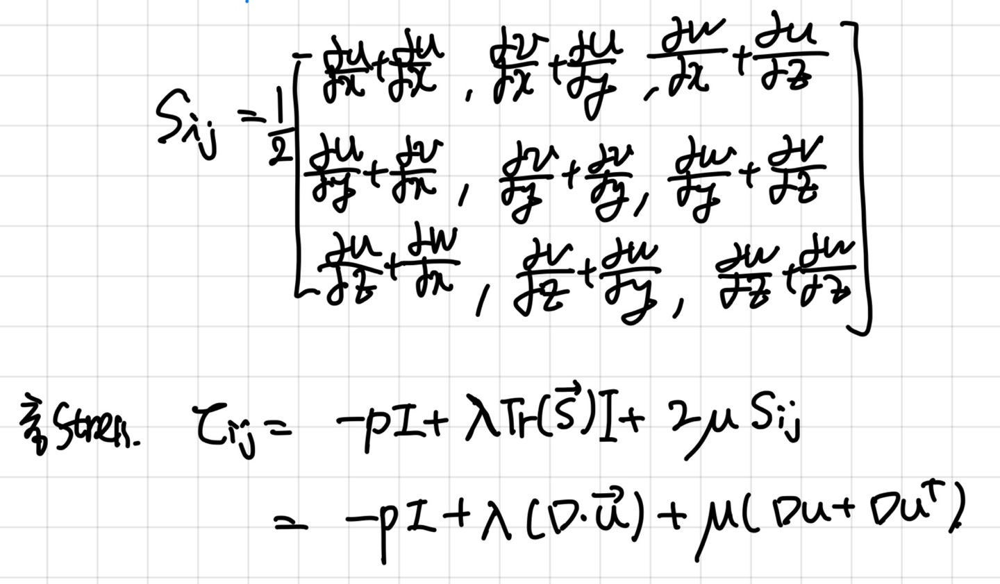
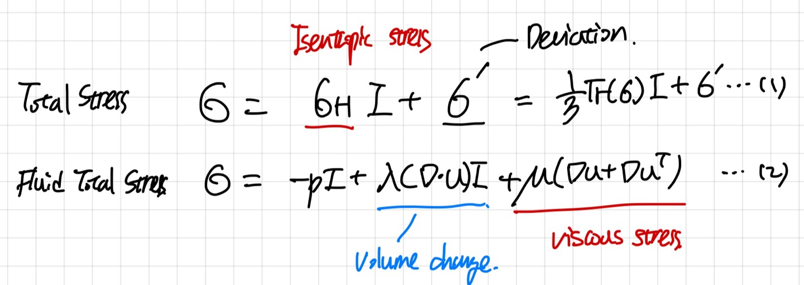
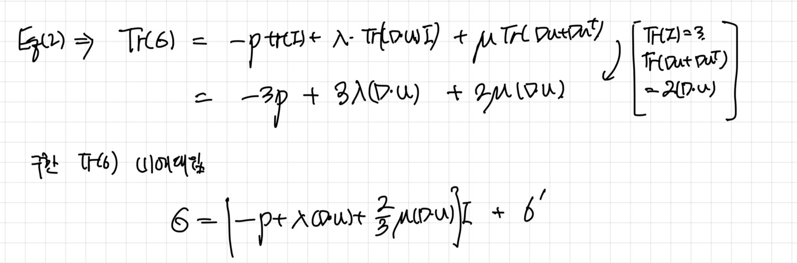
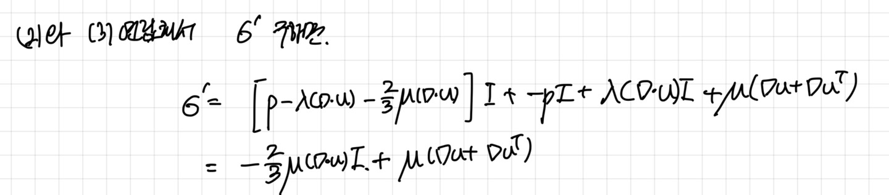
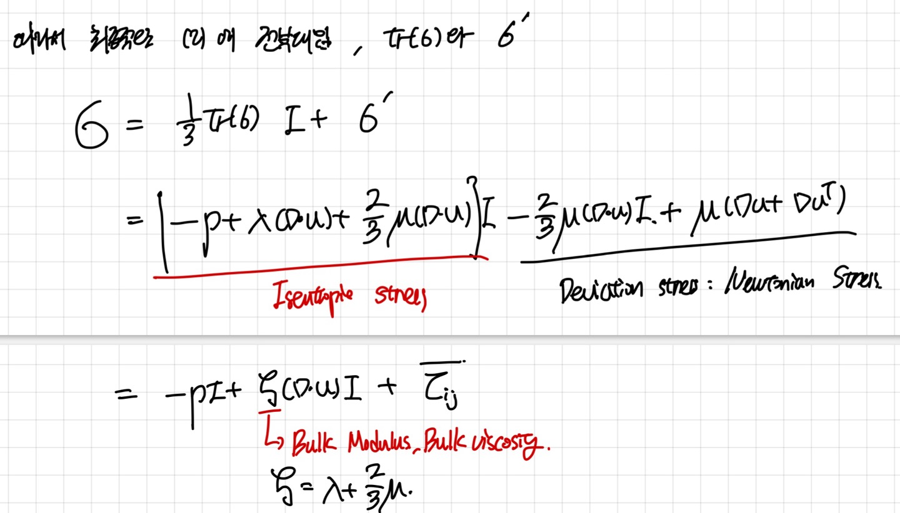
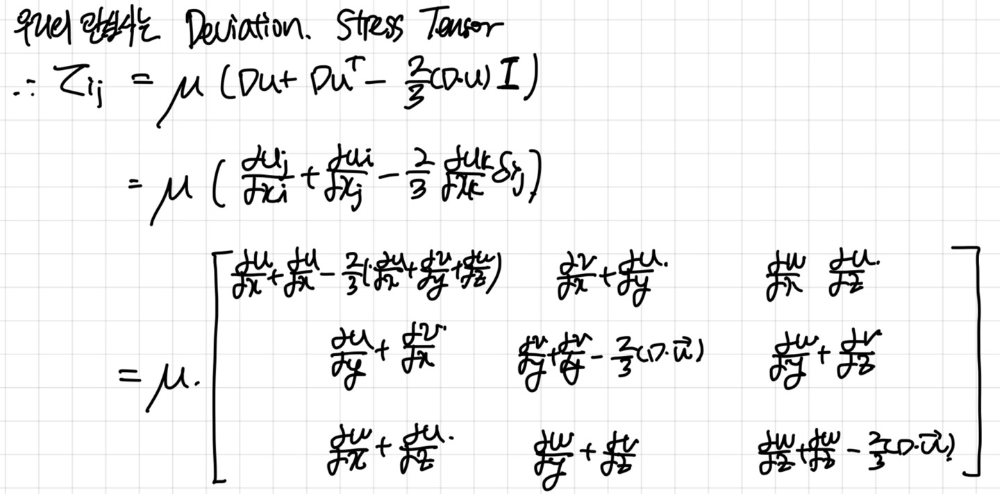

---
{
"layout": "note",
"title": "[Fluid mechanics] Stress tensor_Lame's Parameters part2",
"journal": true,
"section": "Study",
"topic": "Fluid Mechanics",
"excerpt": "[Fluid mechanics] Stress tensor_Lame's Parameters part2 이전 포스터에서, Strain tensor를 이용하여, 유체에 작용하는 Stress 를 Lame's parameter lambda, ",
"classes": "wide",
"permalink": "/blog/mechanical-engineering/fluid-mechanics/fluid-mechanics-stress-tensor-lames-parameters-part2/",
"study_area": "Mechanical",
"date": "2024-05-13",
"source_url": "https://jeffdissel.tistory.com/m/80",
"header": {
"teaser": "/blog/mechanical-engineering/fluid-mechanics/fluid-mechanics-stress-tensor-lames-parameters-part2/images/img-001.jpg"
}
}
---
{% raw %}[Fluid mechanics] Stress tensor_Lame's Parameters part2

이전 포스터에서, Strain tensor를 이용하여,
유체에 작용하는 Stress 를
Lame's parameter lambda, u를 더해서 위 식을 도출 하였다.
위 식이 사실 Fluid stress tensor (
τ_ij ) 이다.
이제, 이 Tensor을 약간 변형 시켜 보자.
편의상
τ_ij = σ 로 표현 하겠다.
자, 지금부터, Stress tensor를 Isentropic stress 와 Deviation part로 나누어서 표현해보자.
즉, x,y,z모든 방향으로 공통적으로 작용하는 공통항을 제외시킨 stress
Deviation Stress 를 구하기 위함이다.

Deviation stress =
σ'
Isentropic stress = σ_H = Tr( σ ) / 3
먼저 σ_H 를 구하기 위해 Eq (2) 의 Matrix의 Trace 를 구하면,



자 여기서 우리가 배운 Bulk Modulus 의 개념이 나오게 된다.
그리고 우리는 Isentropic stress가 아닌
x,y,z 각항에 따로 존재하는 Devication stress가 관심이 있으므로,

최종적으로,다음과 같이 표현 할 수 있다.{% endraw %}